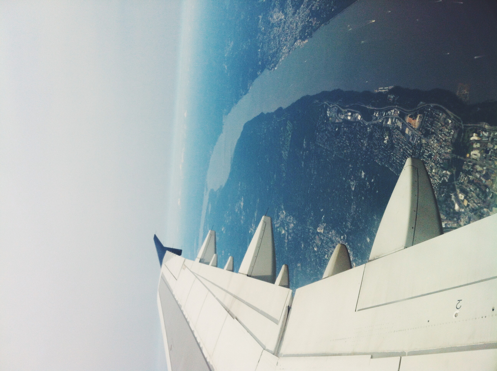
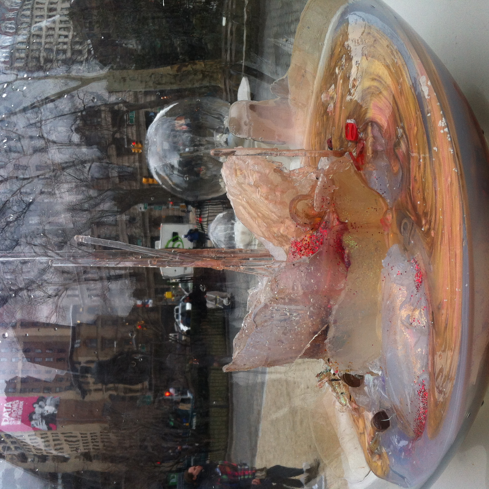
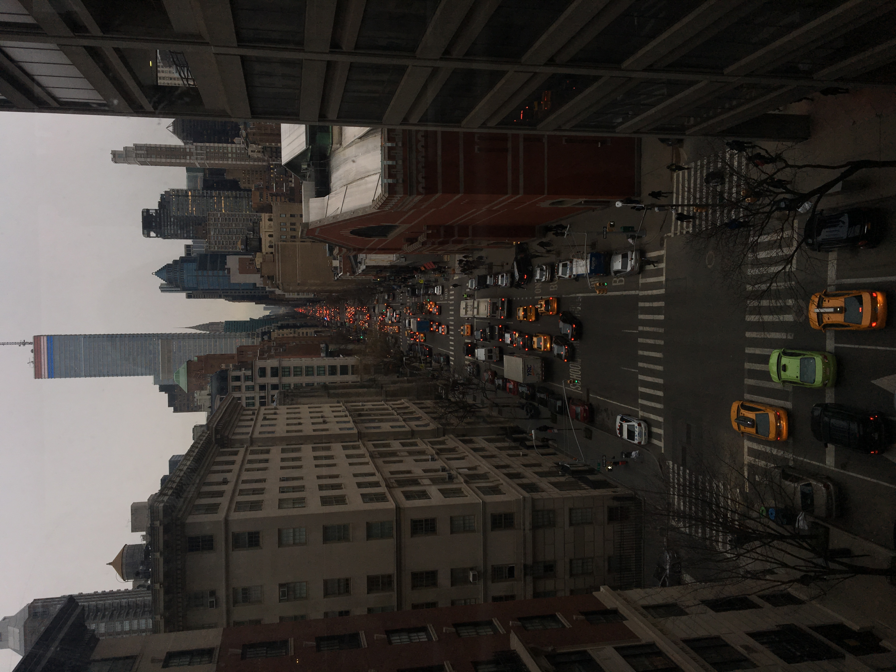
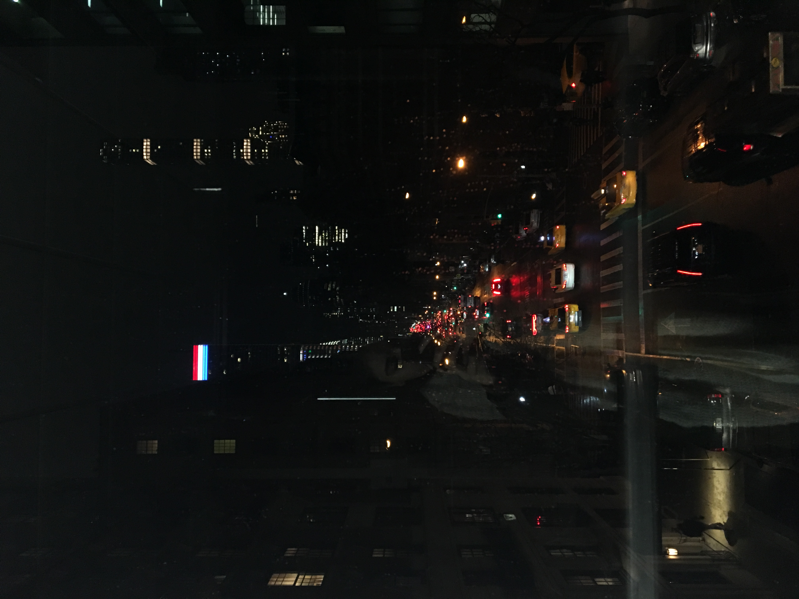
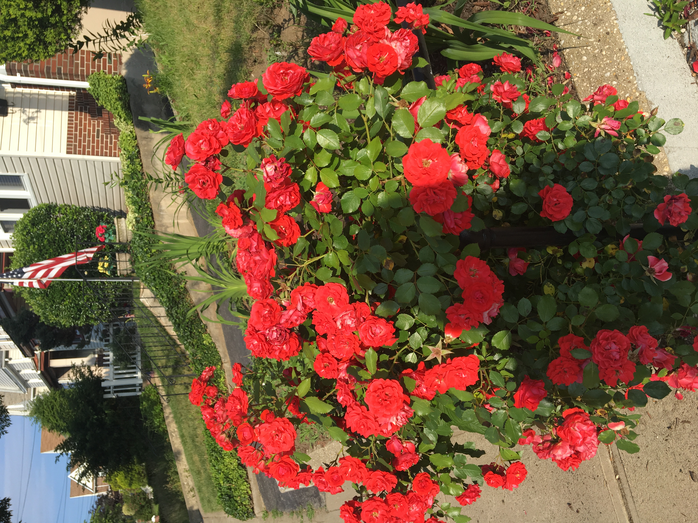
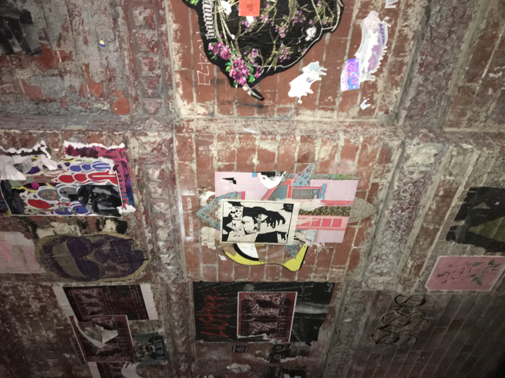

Words Consumed Me First, The Photos Were After Thoughts, The Colors I Got Lost In
We Grew Here You Flew Here

"The City Made Me"
We grew here and you flew here. The concreate pavement raised me when adults weren't looking. When i tumbled to the ground it kissed my skin and reminded me that life can only go up. People shuffled through train cars carrying the stench of cigarrettes and marijuana. Ladies pushing icy carts yelling "coco, mango, cherry!" after school made the end of spring semester worth it. Show time performers inspired kids to join gymnastics not realizing they had to teach themselves those tricks on playground jungle gyms. It's not about Times Square, or Rockerfeller Center, or Wall Street. It's not about trying to find the best hotel that gives you a view of the Ball Dropping on New Years Eve. It's about YOU . Did it make you who you are today?
We grew here and you flew here. The concreate pavement raised me when adults weren't looking. When i tumbled to the ground it kissed my skin and reminded me that life can only go up. People shuffled through train cars carrying the stench of cigarrettes and marijuana. Ladies pushing icy carts yelling "coco, mango, cherry!" after school made the end of spring semester worth it. Show time performers inspired kids to join gymnastics not realizing they had to teach themselves those tricks on playground jungle gyms. It's not about Times Square, or Rockerfeller Center, or Wall Street. It's not about trying to find the best hotel that gives you a view of the Ball Dropping on New Years Eve. It's about YOU . Did it make you who you are today?

"Mirror Looking Glass"
If there is anything i've learned over the course of my 21 years of life, it's that people trickle in and out to show you things you might not have seen otherwise. Regardless of where they come from, or how they cross paths with you, they give you a glimpse of yourself in the situations you both get thrown into. Whether it's love, hardship, pain, or growth. It isn't easy looking at yourself because you only see yourself from your perspective. Push past the looking glass, these people offer you insight through their iris' for a change. Growth and change are not linear.
If there is anything i've learned over the course of my 21 years of life, it's that people trickle in and out to show you things you might not have seen otherwise. Regardless of where they come from, or how they cross paths with you, they give you a glimpse of yourself in the situations you both get thrown into. Whether it's love, hardship, pain, or growth. It isn't easy looking at yourself because you only see yourself from your perspective. Push past the looking glass, these people offer you insight through their iris' for a change. Growth and change are not linear.

"Finding my Niche in a Crowd"
I have constantly looked for myself in pieces of my art. Idols mass produced by industries that don't even love the people they shove down our throats. In strangers on the internet that have the courage to do all the things I have longed for. Desired to achieve. I search for representation in places that will never even see me as a whole human being.Why do we always wait for someone to shine light on us? Why do we constantly feel like we aren't enough? You can not look for someone to photocopy who you are and plaster it across tv screens and movie theatres. I never fit into a niche anyway, i highly doubt the rest of us do.
I have constantly looked for myself in pieces of my art. Idols mass produced by industries that don't even love the people they shove down our throats. In strangers on the internet that have the courage to do all the things I have longed for. Desired to achieve. I search for representation in places that will never even see me as a whole human being.Why do we always wait for someone to shine light on us? Why do we constantly feel like we aren't enough? You can not look for someone to photocopy who you are and plaster it across tv screens and movie theatres. I never fit into a niche anyway, i highly doubt the rest of us do.

"Stars"
When i wake up in the middle of the night i don't expect to find anything other than a quiet dark room tucked away in a part of the five borroughs that could be mistaken for long island to some, or east new york to others depending on where your tax bracket falls. In the middle of the day when im shuffling between classes i am reminded that all our hearts are beating within the same vicinty. Under hundreds of burning lights. There is no dark room here. Just artifical starts and speeding roadways.
When i wake up in the middle of the night i don't expect to find anything other than a quiet dark room tucked away in a part of the five borroughs that could be mistaken for long island to some, or east new york to others depending on where your tax bracket falls. In the middle of the day when im shuffling between classes i am reminded that all our hearts are beating within the same vicinty. Under hundreds of burning lights. There is no dark room here. Just artifical starts and speeding roadways.

"My mother's Flowers"
Rosehip, Lavender, Eucalyptus
She douses her skin in oils paying homage to her toors. Una tierra seca con plantas de qualquier color y altura. All so beautiful engulfing the countryside. Pitaya blooms from the cacutus and the Magueys sprout up from the rocky terrain. Both so sweet on the inside, how could something so magical bloom in a place with barren soil? You grow and sprout despite the desert they left you in, the same way the cactus and the maguey do. My mother carries centuries of suffering on her skin the same way your grandmothers do. the same way we all do. Because that's our blood in the dirt that made the flowers bloom. I am my mother's lavender and lilies, and my sister? She is the rose that blooms everlasting in the middle of a drought. Her thorns given to her by a mother that knew her power would need protection. All our mothers bestow upon us thorns, for we are their flowers, captivating and strong. Head to our wishes, we are not the fallen, in power is where we belong. Forgotten desert lotus' that started revolutions.
Rosehip, Lavender, Eucalyptus
She douses her skin in oils paying homage to her toors. Una tierra seca con plantas de qualquier color y altura. All so beautiful engulfing the countryside. Pitaya blooms from the cacutus and the Magueys sprout up from the rocky terrain. Both so sweet on the inside, how could something so magical bloom in a place with barren soil? You grow and sprout despite the desert they left you in, the same way the cactus and the maguey do. My mother carries centuries of suffering on her skin the same way your grandmothers do. the same way we all do. Because that's our blood in the dirt that made the flowers bloom. I am my mother's lavender and lilies, and my sister? She is the rose that blooms everlasting in the middle of a drought. Her thorns given to her by a mother that knew her power would need protection. All our mothers bestow upon us thorns, for we are their flowers, captivating and strong. Head to our wishes, we are not the fallen, in power is where we belong. Forgotten desert lotus' that started revolutions.

"The Dirt"
When i was younger i spent a lot of time playing in the dirt with my sister. We'd dig up worms in the backyard and i'd get chased by family members through sprinklers in my neighborhood playground. My parents have a small garden snf every summer i watch lilies and gladiolus bloon in our front yard, because despite my parents old age they never stopped playing in the dirt. It's one of their favorite things to do. Flowers are homage to where i come from. places where i know my parents' souls miss.
When i was younger i spent a lot of time playing in the dirt with my sister. We'd dig up worms in the backyard and i'd get chased by family members through sprinklers in my neighborhood playground. My parents have a small garden snf every summer i watch lilies and gladiolus bloon in our front yard, because despite my parents old age they never stopped playing in the dirt. It's one of their favorite things to do. Flowers are homage to where i come from. places where i know my parents' souls miss.

"Long Live"
Jay Z said long live the world trade. What about long live the empire state? What about long live the dynasty of you and me? The graffiti down in the Lower East Side has been there since before i knew how to read. It's a cultural reset when you think about how polished it looks now. The roots are still there, you just have to dig a little deeper to find them.
Jay Z said long live the world trade. What about long live the empire state? What about long live the dynasty of you and me? The graffiti down in the Lower East Side has been there since before i knew how to read. It's a cultural reset when you think about how polished it looks now. The roots are still there, you just have to dig a little deeper to find them.

"When i grow up"
When i grow up i want to be as big as the empire state building. I want to touch the moon and teach it how to dance salsa. I want to dive so deep into the ocean that i find Atlantis and all it's secrets. I want the animals to speak to me about the earth around us and play hide and seek with the spirits when they come to visit. I want the people that i love to stop being displaced by growing communities of invaders. I want New York Native to mean something again. I don't want to feel uncomfortable with the place i grew up in. When i grow up i still want me neighborhood to feel like home.
When i grow up i want to be as big as the empire state building. I want to touch the moon and teach it how to dance salsa. I want to dive so deep into the ocean that i find Atlantis and all it's secrets. I want the animals to speak to me about the earth around us and play hide and seek with the spirits when they come to visit. I want the people that i love to stop being displaced by growing communities of invaders. I want New York Native to mean something again. I don't want to feel uncomfortable with the place i grew up in. When i grow up i still want me neighborhood to feel like home.

"Hope"
As a child the world is a place to be explored. When there is an unknown what do we do ? We jump head first into the void because there is no predisposition to fear. We learn about fear when we grow up. As kids we are as free as can be. Growing in a city with mountains of unknowns we learn how to navigate the void.
As a child the world is a place to be explored. When there is an unknown what do we do ? We jump head first into the void because there is no predisposition to fear. We learn about fear when we grow up. As kids we are as free as can be. Growing in a city with mountains of unknowns we learn how to navigate the void.